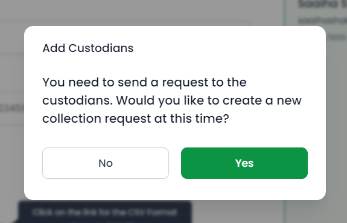
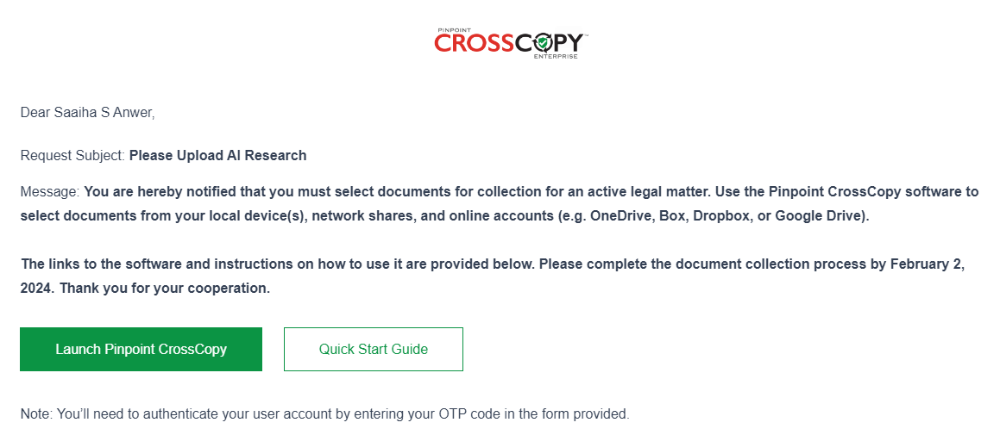
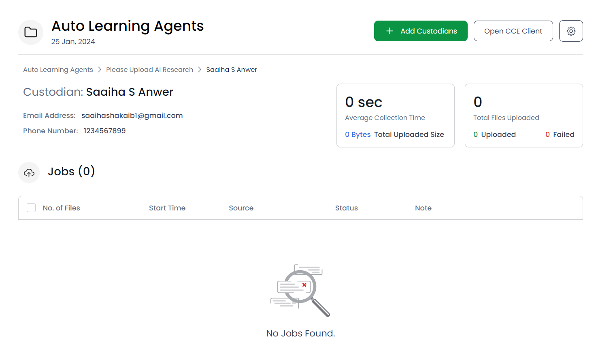

After you have added all your custodians and clicked on Finish button, you will see a prompt asking to generate a new request:
You will then be asked to create a new request by filling in the required details. After adding the request subject, request message, and selecting the custodians that you wish to notify, click on the Send button.

The selected custodians will receive the request via Email or Phone Number as per your choice. As we had selected Email, the following email was received by the custodian:
Consequently, you will be able to see the generated requests in your project’s detailed view.

To view the custodians of the project, click on a request. A screen will open showing all the custodians of that project, along with an option to resend the notification in case a custodian has missed it.

Click on the custodian’s name to view their details.
